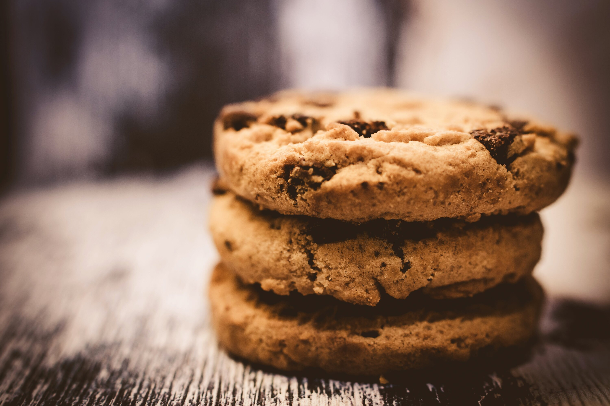

No meal or family gathering is complete without a tasty treat. The Chambers family is no exception. Our love for sweets has lead to some wonderful recipes and even better memories.
31⁄2 cups flour
11⁄2 cups sugar
1 tsp salt
2 tsp baking powder
2 eggs, beaten
2 tsp vanilla
1 tsp lemon extract
2 sticks of butter, softended
Mix flour, sugar, salt, and baking powder together in a large bowl. After it's mixed together, cut in butter. In a smaller bowl combine eggs, vanilla, and lemon extract. Combine with the large bowl and mix with hands. Bake at 375 for 10-12 minutes.

14 oz coconut
1 cube butter, softended
1 can sweetened condensed milk
2 lb powder sugar
1 bag of semi-sweet chocolate chips
1⁄2 bar of paraffin wax
Mix coconut, butter, powder sugar, and sweetened condensed milk together with hands. After it's mixed, form into balls. Melt in a double boiler chocolate chips and paraffin wax. Dip balls into chocolate. Let dry and freeze overnight.